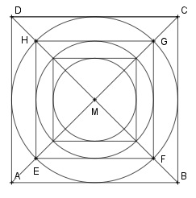

Aufgabe 111
a) Wie groß ist für l0 = 1 die Länge ln nach
n Schritten?
 b) Wie groß ist im gleichseitigen Dreieck für
A0 = 1 die farbige Fläche An nach n Schritten?
b) Wie groß ist im gleichseitigen Dreieck für
A0 = 1 die farbige Fläche An nach n Schritten?

Wie löse ich Matheaufgaben?
Folgen und Reihen
Sie sehen eine gelbes Eingabefeld oder
den Schalter: Lösung.
Tragen Sie Ihr Ergebnis ein, prüfen Sie es
oder starten Sie eine Lösung.
Aufgabe 110 Auf einem Sparbuch sind 10 000 € angelegt. a) Um wieviel € wäre der Ertrag bei einer Verzinsung pro Monat höher als der Jahreszins bei einem Jahreszinssatz von 12 %? b) Um wieviel € wäre der Ertrag bei einer Verzinsung pro Vierteljahr höher als pro Halbjahr? Um €
Aufgabe 111 a) Wie groß ist für l0 = 1 die Länge ln nach n Schritten?
Aufgabe 112 a) Eine Bearbeitungsmaschine hat eine niedrigste Drehzahl von 16 1/min und eine höchste von 90 1/min. Zur Verbesserung des Einsatzes der Maschine sollen weitere 4 Drehzahlen dazwischen geometrisch eingestuft werden. Bestimmen Sie diese 4 Drehzahlen auf 1 Stelle nach dem Komma. a2 = 1/min b) Mit einem Schaltwiderstand können zwischen 256 Ω und 16 Ω weitere 3 Widerstände geometrisch abgestuft geschaltet werden. Welche Widerstände sind das?
Aufgabe 113 a) Auf welchen Betrag wachsen 5 000 € in 4 Jahren bei einem Zinssatz von 4,5 % an? b) Wie hoch war der angelegte Betrag, wenn er in 22 Jahren bei einem Zinssatz von 4% auf 8 500 € angewachsen ist?
Aufgabe 114 a) In wieviel Jahren wachsen 22 500 € bei einem Zinssatz von 5% auf 59 699 € an? In Jahren b) Mit welchem Zinssatz wurde ein angelegter Betrag verzinst, wenn er sich in 20 Jahren verdreifacht hat?
Aufgabe 115 a) Ein Sparer legt 500 € zu einem Zinssatz von 3% an. Wieviel hat er nach 7 Jahren auf seinem Konto, wenn er am Ende eines jeden Jahres weitere 400 € einzahlt? b) Nach wieviel Jahren ist ein Guthaben von 10 000 €, das mit 3,5% verzinst wird, aufgebraucht, wenn am Ende eines jeden Jahres 960 € abgehoben werden?
Aufgabe 116 a) 5 Bakterien teilen sich alle 20 Minuten einmal. Wieviel Bakterien sind es in 6 Stunden. b) Ein weibliches Insekt legt 1 600 Eier. In einem Jahr entstehen 4 Generationen. 75% der Eier sterben ab. Die Hälfte der überlebenden sind weibliche Tiere. b1) Wie hoch ist die Anzahl der überlebenden Insekten in einem Jahr, die auf weibliche Insekten zurückgeführt werden können? Insekten b2) Wie hoch ist die Gesamtzahl der gelegten Eier in einem Jahr?
Aufgabe 117 a) Ein Blatt Papier hat eine Dicke von 0,25 mm. Wie dick in m wäre es, wenn es 20mal gefaltet wird? b) Licht verliert beim Durchgang durch eine Glasplatte 1/12 seiner Stärke. Welche Stärke bleibt nach dem Durchgang durch 12 Platten noch erhalten?
Aufgabe 118 a) 1 l Alkohol wird mit 4 l Wasser vermischt. In 1 l dieser Mischung kommen wieder 4 l Wasser. Wie oft muss dieser Mischvorgang durchgeführt werden, damit die Mischung noch 0,00032 l Alkohol enthält? b) Das Dreieck ABC ist gleichseitig mit einer Seitenlänge von 12 cm. Das Dreieck EFG entsteht, indem die Mittelpunkte der Seiten des Dreiecks ABC miteinander verbunden werden usw.
b₁) Bestimmen Sie jeweils den Flächeninhalt der ersten 3 Dreiecke. A2 = cm2 b₂) Bestimmen Sie die Summe der ersten 5 Flächeninhalte.
Aufgabe 119 a) In dem Quadrat ABCD mit der Seitenlänge 20 cm ist sein Inkreis gezeichnet. Dieser Inkreis ist der Umkreis des Quadrates EFGH usw. a1) Bestimmen Sie jeweils den Flächeninhalt der ersten 3 Quadrate. a2) Bestimmen Sie jeweils den Flächeninhalt der ersten 3 Kreise. a3) Bestimmen Sie die Summe der Flächeninhalte der ersten 10 Quadrate. a4) Bestimmen Sie die Summe der Flächeninhalte der ersten 10 Kreise.

b) Ein Bauer sollte von seinem König wegen treuer Dienste ein Geschenk erhalten. Er wünschte sich die Summe der Weizenkörner, die entsteht, wenn man mit einem Korn auf dem ersten Feld eines Schachbretts beginnt und die Anzahl auf den nachfolgenden Feldern jeweils verdoppelt. b1) Wieviel Körner sind es? b2) 20 000 Körner wiegen ein kg. Wieviel Waggons mit einem Fassungsvermögen von 10 t würden zum Abtransport gebraucht? b3) Ein Waggon ist 15 m lang. Wie lang wäre die Kette aller Waggons? b4) Wie lange braucht ein Lichtstrahl (Lichtgeschwindigkeit 300 000 km/s), um vom Anfang bis zum Ende der Kette zu gelangen?
Aufgabe 120 a) In einem Gefäß befinden sich 15 l 96%iger Alkohol. Um den Alkohol zu verdünnen gibt man erst 3 l Wasser hinzu und entnimmt dann 3 l Mischung. Wieviel prozentig ist die Mischung, wenn dies 6mal wiederholt wird? Wie oft muss man den Vorgang wiederholen, damit die Mischung 18,6%ig wird? mal b) Ein Becher enthält 1 dm³ Wasser, in dem 50 g Farbstoff gelöst sind. Nach dem Entleeren bleibt noch 1 cm³ dieser Lösung im Eimer. Wieviel g Farbstoff sind noch vorhanden, wenn man zum Spülen fünfmal Wasser nachfüllt und den Becher danach jedesmal bis auf 1 cm³ entleert?
Aufgabe 121 a) Das Quadrat ABCD hat eine Seitenlänge von 10 cm. Verbindet man die Seitenmitten miteinander, entsteht das Quadrat EFGH. Wie groß ist der Flächeninhalt der Quadrate insgesamt für die ersten 10 Quadrate? Wie groß ist der Umfang der Quadrate insgesamt für die ersten 10?
b) In einem Druckluftbehälter mit einem Volumen von 1 dm³ herrscht ein Druck von 1 bar. Der Druck soll mit einer Luftpumpe, die 400 cm³ fasst, auf 10 mbar abgesenkt werden. Wieviel Kolben- bewegungen der Pumpe sind nötig?
Aufgabe 122 a) Eine Uhr zeigt 6.00 Uhr an. Nach welcher Zeit liegen die Zeiger genau übereinander? Welchen Winkel hat der große Zeiger bis dahin überstrichen? b) Der Luftdruck sinkt um jeweils 1,2% alle 100 Höhenmeter. Wie hoch ist er auf einem 2 000 m hohen Berg, wenn der Normalluftdruck 1,01 bar beträgt? Wie hoch liegt ein Ort, in dem ein Druck von 0,9466 bar gemessen wird? Der Ort liegt m hoch.
Aufgabe 123 a) Ein weibliches Insekt legt in einem Jahr 120 Eier. In einem Jahr entstehen 3 Generationen. 60% der Eier sterben ab, 50% der überlebenden Insekten sind weibliche Tiere. Wie hoch ist die Gesamtzahl der überlebenden Insekten in einem Jahr? b) Ein Pendel schwingt zu Beginn um 10 cm aus. Welchen Weg legt die Pendelspitze bis zum Stillstand zurück, wenn der Ausschlag nach jeder Halbschwingung um 5% kürzer wird?
Aufgabe 124 a) Ein Unternehmen will seine Produktion in 7 Jahren um 85% steigern. Wie hoch ist seine Gesamtproduktion bei gleichbleibender Steigerung in 7 Jahren, wenn es im ersten Jahr mit 4 500 Stück beginnt? b) Wie lang ist der Streckenzug von a₁ bis aₙ mit x = 10 cm?
Es sind cm.
Aufgabe 125 a) Ein Mottenweibchen legt 150 Eier. Daraus entwickeln sich in einem Jahr 5 Generationen. 2/3 der Eier sterben ab, vom Rest ist die Hälfte Weibchen. Wieviel Wolle fressen die Raupen in einem Jahr, wenn jede 20 mg braucht? b) Eine Flasche enthält 100 cm³ Lösung von 40 g Farbstoff. Nach dem Entleeren bleiben noch 0,5 cm³ dieser Lösung in der Flasche. Zum Spülen wird zweimal Wasser nachgefüllt und die Flasche bis auf 0,5 cm³ entleert. Wieviel g Farbstoff sind nach jedem Spülen noch vorhanden?
Aufgabe 126 a1) Wie groß ist die Summe der Weizenkörner, die entsteht, wenn man mit einem Korn auf dem ersten Feld eines Schachbretts beginnt und die Anzahl auf den nachfolgenden Feldern jeweils verdoppelt? a2) Wieviel t wiegen die Körner, wenn 20 Körner 1 g wiegen? a3) Wie groß ist die Summe der Weizenkörner, die entsteht, wenn auf das erste Feld 1 Korn, auf das zweite 3 Körner, auf das dritte 5 Körner usw. kommen? b) Das Dreieck ABC ist gleichseitig. Verbindet man die Seitenmitten miteinander, entsteht das gleichseitige Dreieck EFG usw. Wie groß sind der Flächeninhalt A und der Umfang U aller Dreiecke?
U =
Aufgabe 127 a) Auf welchen Betrag wachsen 1 800 € an, wenn sie 10 Jahre lang zu 5% verzinst und nicht abgehoben werden? b) Auf welchen Betrag wachsen 6 000 € an, wenn sie 15 Jahre lang zu 6,5% verzinst und nicht abgehoben werden?
Aufgabe 128 a) Auf ein Sparbuch wurden am 01. 01. 1996 1 000 € eingezahlt. Welcher Betrag befindet sich am 31. 12. 2011 bei einem Zinssatz von 3,5% auf dem Sparbuch, wenn zwischenzeitlich nichts abgehoben wird? b) Ein Betrag von 6 000 € wurde am 01. 01. 1990 zu 4,5% angelegt. Welcher Betrag steht dem Anleger am 31. 12. 1998 zur Verfügung, wenn er zwischenzeitlich nichts abgehoben hat? Es sind €
Aufgabe 129 a) Ein Betrag von 15 000 € wurde am 01. 01. 1985 zu 6% angelegt. Ab dem 01. 01. 1988 wurde er mit 5%, ab dem01. 01.1991 mit 4% verzinst. Welcher Betrag K steht dem Anleger am 31. 12. 1995 zur Verfügung? b) Welchen Betrag muss man am 01. 01. 1996 zu einem Zinssatz von 5,5% anlegen, wenn am 31. 12. 2010 30 000 € ausgezahlt werden sollen?
Aufgabe 130 a) Ein Kapital wird 5 Jahre lang mit 5% und dann 6 Jahre lang mit 4% verzinst. Wie hoch war das Anfangskapital, wenn es auf 9 876 € angewachsen ist? € b) Ein Sparer zahlt am Anfang des 1. des 5. und des 6. Jahres 4 000 € auf sein Konto ein. Am Ende des 8. Jahres ist sein Kontostand 17 584,22 €. Wie hoch war der Kontostand vor der ersten Einzahlung, wenn ein Zinssatz von 3,5% über die Laufzeit vereinbart war?
Aufgabe 131 a) Eine Schuld von 5 400 € zahlbar in 5 Jahren soll jetzt durch eine Einmalzahlung abgelöst werden. Wie hoch ist der Einmalbetrag, wenn ein Zinsatz von 6 %, allerdings bei halbjährlicher Verzinsung, über die Laufzeit zugrundegelegt wird? b) Ein Bankkunde hat die Wahl zwischen: 12 000 € Auszahlung sofort, 22 500 € Auszahlung in 10 Jahren oder 36 000 € Auszahlung in 20 Jahren. Welches Angebot ist das günstigste, wenn ein Zinssatz von 6% vereinbart wurde?
Aufgabe 132 a) Der Käufer eines Hauses macht dem Verkäufer 3 Angebote zur Auswahl: 1. 400 000 € sofort. 2. 100 000 € sofort, 400 000 € in 5 Jahren. 3. Raten zu je 158 000 €, eine Rate sofort, die zweite nach 3 und die dritte nach 6 Jahren. Verzinsung von 6% für alle Angebote. Welches Angebot ist für den Verkäufer am günstigsten? b) Ein Unternehmer hat einen ersten Kredit jetzt und einen in gleicher Höhe 5 Jahre später benötigt. 3 Jahre nach der 2. Auszahlung hatte er Schulden in Höhe von 302 577,47 €. Wie hoch waren die Kredite, wenn eine Verzinsung von 7,5% vereinbart war? €
Aufgabe 133 a) Auf welchen Betrag steigen 1 200 € an, wenn sie 5 Jahre zu 12% jährlich oder halbjährlich oder vierteljährlich verzinst werden? b) Ein Betrag von 5 000 € wird zu 4,8% verzinst. Auf wieviel € ist er nach 6,5 Jahren angewachsen, wenn die Zinszahlung monatlich erfolgt?
Aufgabe 134 a) Ein Kapital von 5 000 € hat sich innerhalb von 12 Jahren verdoppelt. Zu welchem gleichbleibenden Zinssatz war es angelegt? Zu % b) Zu welchem gleichbleibenden Zinssatz war ein Betrag von 5 000 € ausgeliehen, wenn die Rückforderung nach 5 Jahren 6 535 € beträgt?
Aufgabe 135 a) In wieviel Jahren verdreifacht sich ein Kapital, wenn es zu einem Zinssatz von 4% angelegt war? b) In wieviel Jahren ist ein Kapital von 10 000 € bei einem Zinssatz von 5% auf 14 774,55 € angewachsen?
Aufgabe 136 a) Nach wieviel Jahren fallen 5 073,38 € Zinsen an, wenn 15 000 € zu 6% angelegt waren? b) Jemand gründet eine Stiftung mit einem Kapital von 198 000 € mit der Bedingung, dass das Geld so lange mit 5% angelegt wird, bis die Zinsen in einem Jahr ausreichen, 4 Stipendien zu jeweils 4 000 € auszuzahlen. Nach wieviel Jahren ist dies der Fall? Nach Jahren
Aufgabe 137 a) Wie viele Jahre muss ein Kapital von 6 000 € mit einem Zinssatz von 5,6% bei vierteljährlichem Zinszuschlag verzinst werden, damit es auf 7 706,10 € anwächst? b) Nach welcher Zeit hat sich ein Kapital verdoppelt, das mit 8% bei vierteljährlichem Zuschlag verzinst wird?
Aufgabe 138 a) 35 000 € werden zu 4,8% bei halbjährlichem Zinszuschlag angelegt. Auf welchen Betrag ist das Kapital nach 4 Jahren angestiegen? Zu welchem Zinssatz (Effektivzins) hätte das Kapital bei jährlichem Zinszuschlag verzinst werden müssen, um nach 4 Jahren auf den gleichen Betrag zu kommen? Zu % b) 80 000 € werden zu 6,2% bei vierteljährlichem Zinszuschlag angelegt. Auf welchen Betrag ist das Kapital nach 8 Jahren angestiegen? Zu welchem Zinssatz (Effektivzins) hätte das Kapital bei jährlichem Zinszuschlag verzinst werden müssen, um auf den gleichen Betrag zu kommen?
Aufgabe 139 a) Ein Arbeitnehmer zahlt 1 200 € 30 Jahre lang nachschüssig zu einem Zinssatz von 4% in eine Rentenanstalt ein. a1) Welcher Betrag steht ihm nach 30 Jahren zur Verfügung? a2) Wie hoch wäre er bei vorschüssiger Einzahlung? b) Über welchen Betrag kann eine Person nach 15 Jahren verfügen, die erst 6 Jahre lang 5 000 € und dann 5 Jahre 8 000 € nachschüssig zu einem Zinssatz von 4% auf ein Sparkonto einzahlt? Wie hoch ist der Barwert der Einzahlungen?
Aufgabe 140 a) Ein Sparvertrag wird so abgeschlossen, dass 10 Jahre lang 2 500 € nachschüssig zu 6% eingezahlt werden sollen. Aus persönlichen Gründen wird diese Zahlung nach 5 Jahren für 2 Jahre unterbrochen, danach wieder aufgenommen. a1) Wie hoch wäre der Rentenendwert bei nicht unterbrochener Zahlung? a2) Wie hoch ist er tatsächlich? € b) Ein Sparvertrag wird am Anfang eines Jahres so abgeschlossen, dass 15 Jahre lang 2 000 € nachschüssig zu 6% eingezahlt werden sollen. Diese Zahlung wird nach 6 Jahren dreimal unterbrochen, danach fortgesetzt. Wie hoch ist das Guthaben nach 15 Jahren?
Aufgabe 141 a) Einem Kind ist durch Erbschaft 15 Jahre lang eine Zahlung von jeweils 3 000 € zugesichert. Zur Finanzierung einer größeren Anschaffung bittet es darum, ihr sofort den Wert der Erbschaft auszuzahlen. Welcher Betrag steht ihm bei nachschüssiger Einzahlung und einem Zinssatz von 4,5% zu? b) Eine Person will an ihrem 50. Geburtstag einen Betrag so anlegen, dass ihr mit Vollendung des 65. Lebensjahres 10 Jahre lang eine nachschüssig gezahlte jährliche Rente von 8 000 € ausgezahlt werden kann. Welchen Betrag muss sie bei einer Verzinsung von 4% anlegen?
Aufgabe 142 a) Wie hoch ist der Betrag, den man sich auszahlen lassen könnte, wenn man einen Anspruch auf eine 25-jährige nachschüssige Rente von 6 000 € bei einem Zinssatz von 5,5% hat? b) Eine Versicherung hat 10 Jahre lang am Anfang eines jeden Jahres eine Rente von 5 000 € zu zahlen. Zu Beginn des 6. Jahres schlägt sie vor, den bestehenden Restanspruch durch eine Einmalzahlung abzulösen. Wie hoch ist der Barwert der Rente bei einer Verzinsung von 5%? Wie hoch wäre die Einmalzahlung bei dieser Verzinsung? Einmalzahlung €
Aufgabe 143 a) Eine Rente von 6 000 € soll nachschüssig ab 2004 15 Jahre lang gezahlt werden. Welches Kapital musste 1996 zu 5% angelegt werden? Im Jahr 2000 wird die Rente bei gleicher Laufzeit um 4 Jahre vorgezogen. Wie hoch ist dann die Rente? b) Für 2 Kinder wird ein Kapital zur Finanzierung ihres Studiums zu 4% festgelegt. Das erste Kind beginnt das Studium in 4, das zweite in 7 Jahren. Es wird bei beiden mit einem 5jährigen Studium gerechnet, das jährlich mit 15 000 € vorschüssig unterstützt werden soll. Wie hoch ist das anzulegende Kapital? Wie verändern sich die Jahreszahlungen, wenn das Studium ein Jahr länger dauert?
Aufgabe 144 a) Der Barwert einer nachschüssigen Rente mit 10jähriger Laufzeit bei einer Verzinsung von 4% beträgt 32 443,58 €. Wie hoch ist die jährliche Rente? € b) Zur Finanzierung einer Rente werden vom 50. bis zum 62. Lebensjahr nachschüssig jährlich 3 000 € eingezahlt. Nach der Pensionierung mit 62 soll dann 10 Jahre lang eine nachschüssige Rente bei einer Verzinsung von 5% gezahlt werden. Wie hoch ist die Rente? Wie hoch wäre sie, wenn bis zum 65. Lebensjahr eingezahlt wird?
Aufgabe 145 a) Eine Lebensversicherung über 360 000 €, auszuzahlen mit Vollendung des 65. Lebensjahres, soll in eine nachschüssige Rente umgewandelt werden. Wie hoch ist die jährliche Rente über 10 Jahre, wenn ein Zinssatz von 5% vereinbart wird? Wie lange könnte eine Rente von 18 000 € jährlich ausgezahlt werden, wenn mit einem Zinssatz von 4% gerechnet wird? b) Eine Lebensversicherung über 120 000 € soll in 6 Jahren ausgezahlt werden. Sie soll ab diesem Zeitpunkt in eine nachschüssige, 20 Jahre zu zahlende Rente, bei einem Zinssatz von 4,5% umgewandelt werden. Wie hoch ist der Barwert der Versicherungssumme? Wie hoch ist die Rente?
Aufgabe 146 a) Wie hoch ist eine Rente, die von einer 15jährigen nachschüssigen in der Höhe von 2 500 € in eine 10jährige vorschüsssige umgewandelt wird, wenn 5% Verzinsung vereinbart sind? b) Wie lange kann eine jährliche nachschüssige Rente von 7 538 € gezahlt werden, wenn 120 000 € zu 4% angelegt sind? Jahre
Aufgabe 147 a) Wie hoch ist eine Rente, die von einer 15jährigen nachschüssigen in der Höhe von 2 000 € in eine 10jährige nachschüsssige umgewandelt wird, wenn 5% Verzinsung vereinbart sind? b) Wie lange wird eine Rente in der Höhe von 10 800 € jährlich nachschüssig ausgezahlt, wenn der Rentenendwert 255 960 € bei 4%iger Verzinsung beträgt?
Aufgabe 148 a) Ein Kapital wird mit 4% Zins so angelegt, dass in 5 Jahren eine vorschüssige Rente von 12 000 € 15 Jahre lang gezahlt werden kann. a1) Wie hoch ist das angelegte Kapital? a2) Wie lang könnten 18 000 € jährlich gezahlt werden? a3) Welchen Betrag müsste man 3 Jahre nach der Kapitalanlage hinzuzahlen, damit 18 000 € 15 Jahre lang ausgezahlt werden? b) Ein Kapital von 200 000 € ist zu 6% Zinsen angelegt. Wie lang können in 5 Jahren 24 000 € jährlich ausgezahlt werden? Jahre
Aufgabe 149 a) Eine vorschüssige Jahresrente von 3 200 € zu einem Zinssatz von 5,5% soll 15 Jahre lang ausgezahlt werden. a1) Wie hoch ist der Barwert der Rente? a2) Wie hoch wäre die Rente, wenn sie um 3 Jahre hinausgeschoben wird? a3) Wie hoch wäre sie, wenn die Zahlung nur 12 Jahre geleistet wird? b) Der Geldgewinn bei einer Lotterie steht als Einmalzahlung von 100 000 € oder als lebenslange vorschüssige jährliche Zahlung von 10 000 € zur Verfügung. Nach welcher Zeit sind die beiden Angebote bei einer Verzinsung von 4,5% gleichwertig?
Aufgabe 150 a) Zur Finanzierung eines Hausbaus wird ein Darlehen von 200 000 € bei einem Zinssatz von 6% aufgenommen, die Tilgung beträgt 1%. a₁) Erstellen Sie den Tilgungsplan für die ersten 8 Jahre.a₂) Wie hoch ist die Restschuld nach 16 Jahren?a₃) Wie hoch ist die Restschuld nach 32 Jahren? b) Ein Kredit von 350 000 € soll bei einer Verzinsung von 5% in 10 Jahren getilgt werden. Berechnen Sie die Annuität und den Tilgungsanteil. Annuität = €
Aufgabe 151 a) Wie hoch sind die Annuität und die Restschuld nach 8 Jahren, wenn ein Kredit von 150 000 € bei einem Zinssatz von 6% durch 12 gleich große Annuitäten gelöscht werden soll? b) Ein Kredit von 100 000 € soll bei einer Verzinsung von 8% in 10 Jahren getilgt werden. Berechnen Sie die Annuität, den ersten Tilgungs- betrag, und stellen Sie einen Tilgungsplan für die ersten 3 Jahre auf.
Aufgabe 152 a) Ein Darlehen von 200 000 € soll in 15 Jahren durch Annuitätentilgung zurückgezahlt werden. Die ersten 8 Jahre wird ein Zins von 5%, die restlichen 7 einer von 8,5% vereinbart. Wie hoch ist die Annuität in den ersten 8 und dann in den restlichen 7 Jahren? b) Ein Kredit von 250 000 € soll bei einer Verzinsung von 5,5% in 20 Jahren durch gleich hohe Annuitäten getilgt werden. Wie hoch sind die Annuität und die Restschuld nach 10 Jahren? Annuität = €
Aufgabe 153 a) Ein Darlehen von 500 000 € soll in 7 Jahren durch Annuitätentilgung bei einem Zins von 6% zurückgezahlt werden. Berechnen Sie die Annuität, und stellen Sie den Tilgungsplan für die ersten 3 Jahre auf. b) Die Restschuld eines Kredits von 240 000 €, der mit 6% verzinst und mit einer Tilgung von 1% vereinbart wurde, wird nach 10 Jahren durch einen neuen Kredit zu 4,5% Zins und 1% Tilgung abgelöst. b1) Wie hoch ist die anfängliche Annuität? b2) Wie hoch ist die Restschuld nach 10 Jahren? b3) Wie hoch ist die Annuität des neuen Kredits? b4) Wie lange ist dessen Laufzeit?
Aufgabe 154 a) Eine Familie kann jährlich 14 400 € für die Verzinsung und Tilgung eines Kredits zum Kauf eines Hauses aufbringen. Welchen Kredit kann eine Bank bei einem Zinssatz von 7,5% gewähren, wenn die Laufzeit 20, 25 oder 30 Jahre beträgt? b) Wieviele Jahre dauert die Tilgung eines Darlehens von 1 000 000 €, wenn gleich hohe Annuitäten von 119 277,03 € bei einer Verzinsung von 6% geleistet werden können? Jahre
Aufgabe 155 a) Für den Kauf eines Hauses werden 180 000 € zu einem Zinssatz von 4,5% benötigt. Wie lange muss getilgt werden, wenn 15 000 € jährlich für Verzinsung und Tilgung zur Verfügung stehen? Ermitteln Sie den Tilgungsplan für die ersten 5 Jahre. b) Ein Darlehen von 160 000 € soll mit 6% verzinst und mit 1% getilgt werden. Berechnen Sie die Annuität und die Tilgungsdauer. Wie hoch ist die Annuität, wenn nach 18 Jahren für 2 Jahre die Zahlungen unterbrochen werden, das Darlehen aber in der errechneten Zeit getilgt sein soll?
Aufgabe 156 a) Ein Darlehen von 300 000 € ist mit 7,5% verzinst und soll in 20 Jahren zurückgezahlt werden. Nach 10 Jahren wird die Annuität um 6 000 € erhöht. a₁) Wie hoch ist die ursprüngliche Annuität? a₂) Wie hoch ist die Restschuld nach 10 Jahren? a₃) Wie hoch ist die Restlaufzeit nach Erhöhung der Annuität? Es sind Jahre b) Für eine neue Heizung werden 25 000 € zu 6,8% mit 5jähriger Zinsbindung und einer Tilgung von 1% aufgenommen. Wie hoch ist der 3 Jahre später zu einem Zinssatz von 5% anzulegende Betrag, damit die 25 000 € am Ende der Zinspreisbindung abgelöst werden können?
Aufgabe 157 a) Welcher Betrag muss am Anfang des ersten Jahres bei einer Verzinsung von 5% eingezahlt werden, wenn, vom Ende des 10. Jahres an, 15 Jahre lang eine nachschüssige Jahresrente von 6 000 € gezahlt werden soll? b) Am Anfang eines Jahres wird ein Einmalbetrag eingezahlt, der mit 3,5% verzinst wird. Am Ende eines jeden Jahres kommen 1 500 € hinzu. Nach 10 Jahren beträgt das Guthaben 59 915,05 €. Wie hoch war der Einmalbetrag?
Aufgabe 158 a) Wieviel ist nach 12 Jahren auf einem neu angelegten Sparbuch, wenn jeweils am Jahresende 1 200 €, 3 Jahre nach Anlage des Sparbuchs einmalig 5 000 € und 6 Jahre danach einmalig 8 000 € bei einem Zinssatz von 4% eingezahlt werden? Es sind € b) Wieviel ist nach 10 Jahren auf einem Spar- konto, wenn jeweils am Jahresanfang 2 000 € zu 3,75% eingezahlt, nach 3 Jahren am Jahresende 3 000 € abgehoben und 2 Jahre später 5 000 € eingezahlt werden?
Aufgabe 159 a) Am Ende eines Jahres sind bei einer Verzinsung von 5,5% 12 400 € auf einem Konto. Welcher Betrag muss mit dem Beginn des folgenden Jahres 6 Jahre lang vorschüssig dazugezahlt werden, damit danach 25 000 € auf dem Konto sind? b) Ein Betrag von 50 000 € ist zu 6% angelegt. Wie hoch ist die jährliche Rente, die nach 8 Jahren 12 Jahre lang nachschüssig ausgezahlt werden kann?
Aufgabe 160 a) Auf einem Konto befinden sich am Anfang eines Jahres 20 000 €, die zu 4% verzinst werden. Welcher Betrag muss 5 Jahre lang jeweils am Anfang des Jahres eingezahlt werden, damit am Ende des 5. Jahres 40 000 € angespart sind? b) Wie hoch ist das Restguthaben, wenn von 120 000 €, verzinst mit 5%, 5 Jahre lang jeweils am Jahresende 15 000 € abgehoben werden? Wie lange kann man 15 000 € abheben? Es sind Jahre
Aufgabe 161 a) Auf wieviel ist ein Kapital von 10 000 € angewachsen, wenn 10 Jahre lang jährlich nachschüssig 5 000 € eingezahlt werden und es mit 6% verzinst wird? Nach welcher Zeit sind 200 000 € auf dem Konto? b) Eine Schuld von 20 000 €, verzinst mit 5%, soll durch jährliche nachschüssige Zahlungen von jeweils 2 000 € abgetragen werden. Nach welcher Zeit ist die Schuld gelöscht?
Aufgabe 162 a) Wie lange kann eine nachschüssige Rente von 2 000 € nach Ablauf von 5 Jahren bezogen werden, wenn 20 000 € zu 6% angelegt waren? b) Nach Abschluss eines Bausparvertrages über 90 000 €, werden 5 000 € sofort eingezahlt und danach 10 Jahre lang jeweils 1 800 € am Ende eines Jahres. Wie hoch ist das Sparguthaben am Ende des 10. Jahres, wenn es mit 4,5% verzinst wird? Nach welcher Zeit sind 40% der Vertrags- summe eingezahlt? Nach Jahren
Aufgabe 163 a) Welcher Betrag steht nach Ablauf von 6 Jahren noch zur Verfügung, wenn von einem Kapital von 100 000 € bei einer Verzinsung von 5% am Jahres- ende jeweils 10 000 € abgehoben werden? Wann ist das Kapital aufgebraucht? b) Am Anfang eines Jahres befinden sich 16 000 € auf einem Konto. Sie werden mit 5,5% verzinst. Nach wieviel Jahren ist der Betrag auf 70 930,48 € angestiegen, wenn jährlich nachschüssig 4 000 € eingezahlt werden?
Aufgabe 164 a) Wie lange kann man nachschüssig 4 000 € jährlich von einem Konto abheben, auf dem 30 886,94 € zu 5% liegen? Jahre b) Von einem Sparguthaben von 40 000 €, verzinst zu 6%, sollen nach einer Laufzeit von 5 Jahren Beträge, mal am Jahresanfang mal am Jahresende, so abgehoben werden, dass das angesparte Kapital nicht kleiner wird. Wie hoch sind diese Beträge?
Aufgabe 165 a) Eine Firma hat eine Maschine für 600 000 € gekauft, und schreibt sie degressiv mit 20% ab. a₁) Wie hoch ist der Buchwert am Ende des 5., 7. und 10. Jahres? a₂) Wie hoch sind die Abschreibungsbeträge für das 1., 5. und 10. Jahr? b) Ein Lkw hat einen Wert von 40 000 € und wird mit 30% über 8 Jahre degressiv abgeschrieben. Nach Ablauf des 9. Jahres wird der Restbuchwert unter Berücksichtigung des Erinnerungswertes von 1 € voll abgeschrieben. Wie hoch ist dieser Abschreibungsbetrag?
Aufgabe 166 a) Eine Maschine hat nach 5-maliger degressiver Abschreibung mit 20% noch einen Buchwert von 393 216 €. Wie hoch war der Anschaffungspreis? b) Der Buchwert einer Maschine beträgt am Ende des 4.Jahres bei degressiver Abschreibung mit 20% noch 20 480 €. b1) Wie hoch war der Anschaffungswert? € b2) Nach wieviel Jahren beträgt der Buchwert noch 5 368,71 €?
Aufgabe 167 a) Eine Maschine wird am Anfang eines Jahres für 50 000 € gekauft und soll 10 Jahre genutzt werden. a₁) Berechnen Sie den Abschreibungssatz und den Abschreibungsbetrag bei linearer Abschreibung. a₂) Wie hoch ist der Restbuchwert bei degressiver Abschreibung mit 30% nach 10 Jahren? a₃) Wie hoch sind die Abschreibungsbeträge, wenn am Ende des 5. Jahres von der degressiven zur linearen Abschreibung gewechselt wird? b) Eine Maschine im Wert von 200 000 € soll in 15 Jahren auf ein Fünftel ihres Wertes degressiv abgeschrieben werden. Berechnen Sie den Prozentsatz der Abschreibung.
Aufgabe 168 a) Eine Maschine im Wert von 860 000 € soll in 8 Jahren auf 235 000 € degressiv abgeschrieben werden. Berechnen Sie den Prozentsatz der Abschreibung. % b) Eine Maschine im Wert von 80 000 € wird mit 30% degressiv abgeschrieben. Am Ende welchen Jahres beträgt der Abschreibungsbetrag 968,50 €?
Aufgabe 169 a) Eine Maschine im Wert von 38 000 € wird 8 Jahre lang degressiv bis auf einene Rest- buchwert von 10 212 € abgeschrieben. Der Abschreibungssatz ist in den ersten 4 Jahren doppelt so hoch. Wie hoch ist der Abschreibungs- satz in den ersten 4 Jahren? Wie hoch war der Buchwert vor der Änderung des Abschreibungssatzes? b) Mit welchem Prozentsatz muss eine Maschine degressiv abgeschrieben werden, wenn sie nach 8 Jahren den gleichen Restwert haben soll wie eine doppelt so teure Maschine, die 10 Jahre lang mit 15% degressiv abgeschrieben wurde?
Aufgabe 170 a) Wie lange wurde eine Maschine im Wert von 120 000 € mit einem Restwert von 21 158 € abgeschrieben, wenn sie eine bestimmte Zeit mit 20% und dann doppelt so lange mit 10% degressiv abgeschrieben wurde? b) Eine Anlage im Wert von 650 000 € soll mit 20% degressiv abgeschrieben werden. Zu Beginn des 6. Jahres nach ihrer Anschaffung erfolgt eine Sonderabschreibung von 20%. Berechnen Sie den Buchwert nach 8 Jahren. Mit welchem Prozentsatz hätte sie von Anfang an abgeschrieben werden müssen, um nach 8 Jahren den gleichen Buchwert ohne Sonderabschreibung zu erzielen? Mit %
Aufgabe 171 a) Eine Maschine wurde am Ende des ersten Jahres mit 240 000 € und am Ende des 5. Jahres mit 98 304 € abgeschrieben. a1) Wie hoch ist der Abschreibungssatz q? a2) Wie hoch ist ihr Anschaffungswert A? a3) Wie hoch ist der Buchwert B nach der 5. Abschreibung? b) Eine Anlage hatte am Ende des 2. Jahres einen Buchwert von 1 350 000 €, am Ende des 7. Jahres einen von 320 362,33 €. Wie hoch sind Abschreibungssatz q und Anschaffungswert A?
zurück